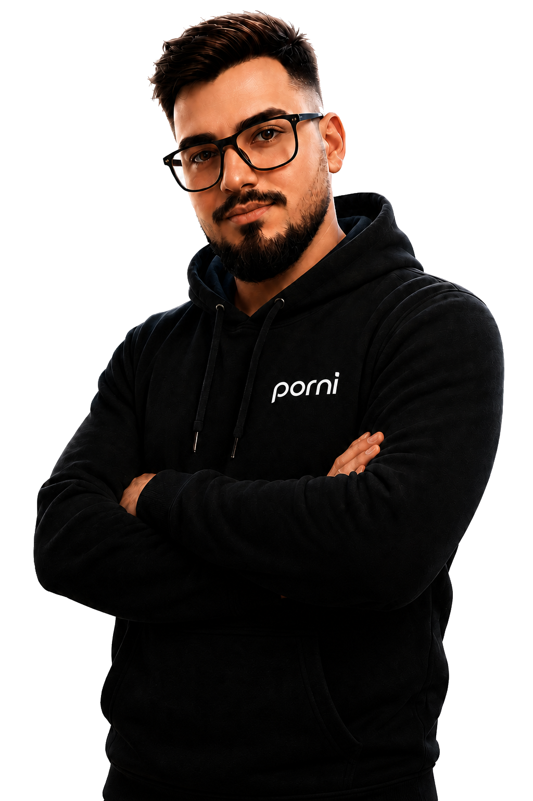

Diagnosticare PC / Laptop
Identificarea problemelor hardware și software, cu recomandări clare.
de la50 lei
Gratuită dacă reparația este efectuată de noi.
Service PC & Laptop · București, Sector 3
Rezolvăm problemele PC-ului sau laptopului tău în București, Sector 3, simplu și transparent — de la diagnosticare la upgrade și optimizare.
IT SOLUTIONS / STATUS
SISTEM VERIFICAT
Servicii și prețuri
Îți explicăm problema pe înțelesul tău și începem lucrarea doar după confirmarea costului.
Identificarea problemelor hardware și software, cu recomandări clare.
Gratuită dacă reparația este efectuată de noi.
Instalare curată, drivere, actualizări și configurare de bază.
Licența nu este inclusă.
Instalare, configurare cont și actualizări pentru aplicațiile Office.
Necesită o licență validă, neinclusă.
Recomandare de componente compatibile, montaj și verificare.
Componentele se achită separat.
Curățare fizică, mentenanță și optimizarea pornirii sistemului.
Prețul variază în funcție de dispozitiv.
Mutarea sistemului și a datelor pe o unitate nouă, când sursa permite.
Unitatea nouă nu este inclusă.
Evaluare și recuperare logică pentru fișiere șterse sau unități accesibile.
Costul final depinde de complexitate.
Configurări, erori, aplicații, email, imprimante și suport de bază.
Per intervenție de până la o oră.
Prețurile sunt orientative și includ manopera, dacă nu este specificat altfel. Oferta finală se confirmă după diagnosticare.
Cum lucrăm
Fără termeni complicați și fără costuri surpriză. Primești o explicație simplă înainte să iei o decizie.
Hai să discutămTrimite-ne pe WhatsApp ce nu funcționează și modelul dispozitivului.
Diagnosticăm cauza și îți prezentăm opțiunile împreună cu prețul.
Intervenim doar după confirmare și verificăm rezultatul înainte de predare.
Inteligență artificială, pe înțelesul tău
O nouă aplicație creată pentru oamenii care vor răspunsuri clare, nu termeni complicați. PORNI te va ajuta să înțelegi problemele digitale și să găsești rapid următorul pas.

Creatorul proiectului
Creatorul proiectului PORNI — Asistent Virtual AI, o inițiativă construită pentru a transforma tehnologia într-un ajutor simplu, clar și accesibil.
„Inteligența artificială m-a ajutat să transform o idee într-un proiect real și să creez ceva inedit pentru a ușura munca de zi cu zi.”Discută despre PORNI
Contact
Oferim servicii în București, Sector 3. Descrie pe scurt situația și spune-ne modelul PC-ului sau laptopului. Îți răspundem cât putem de repede.
Trimite un mesaj